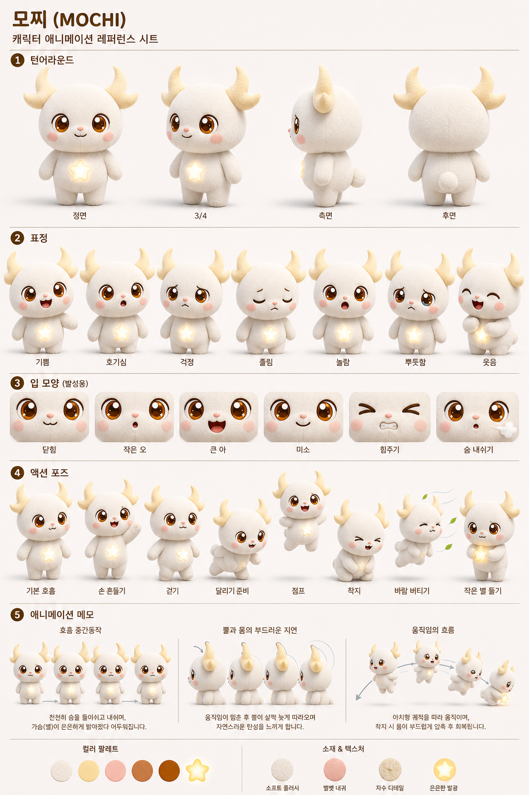
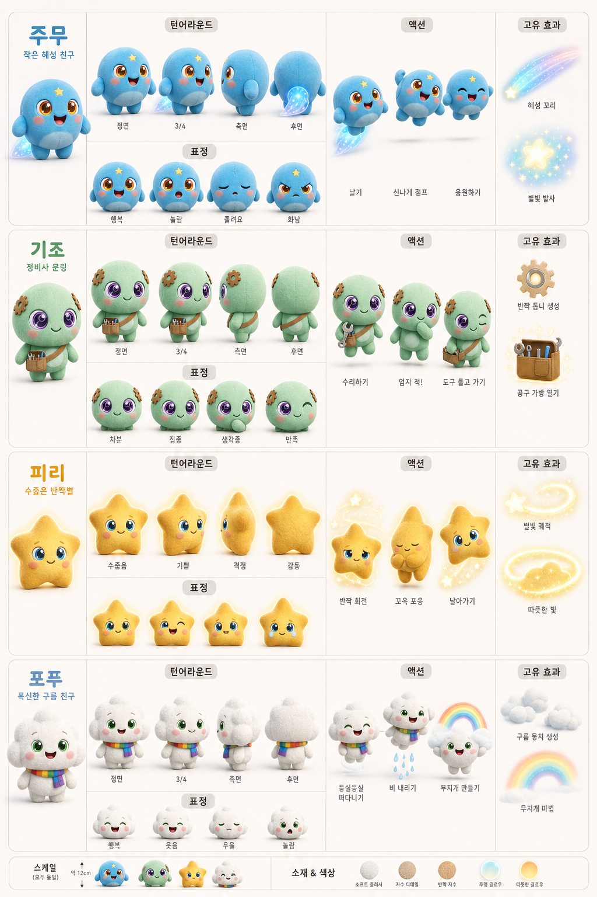
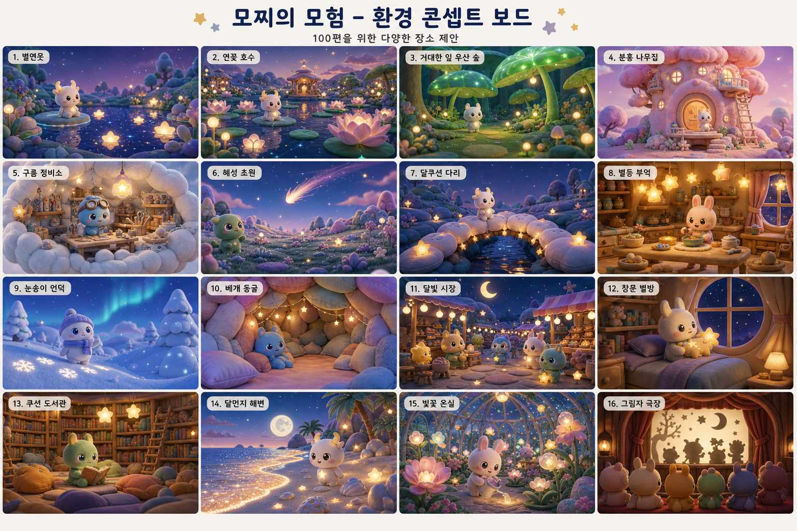
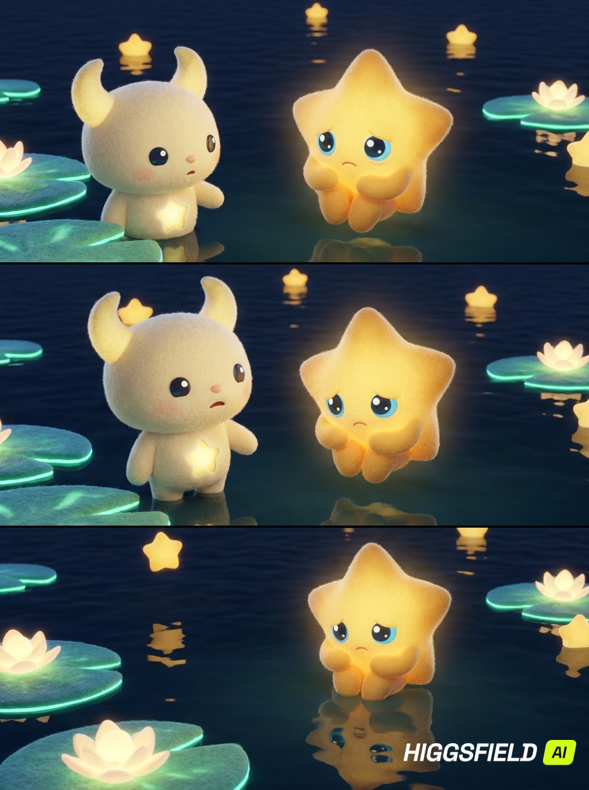
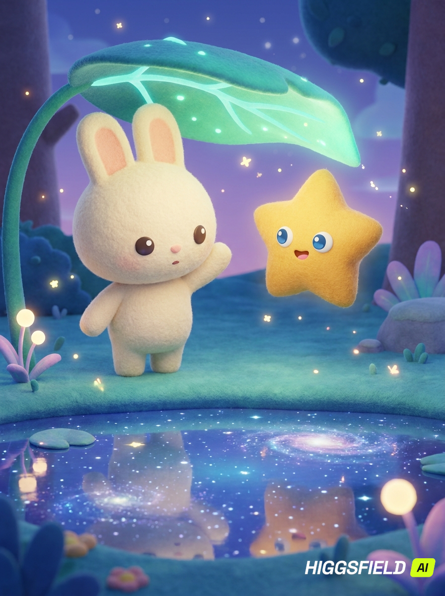

모찌
턴어라운드, 표정, 입 모양, 호흡, 액션 포즈 검수용.
한국의 편의점, 버스정류장, 한강, 문구점 같은 일상 공간에 별빛 판타지가 스며드는 3분 애니메이션 시리즈. 대상은 6-17세, 목소리는 모두 어린 캐릭터 톤으로 유지.

턴어라운드, 표정, 입 모양, 호흡, 액션 포즈 검수용.

각 캐릭터의 고유 실루엣, 표정, 액션, 고유 효과.

흰 플러시 몸, 초승달 뿔, 배의 별, 따뜻한 눈.

한 가지 배경 반복 없이, 편마다 다른 장소 규칙과 색감.

별빛, 물 반사, 부드러운 플러시 세계의 감정 표현.

한국 일상 배경 위에 이런 감성 레이어를 얹는 방향.